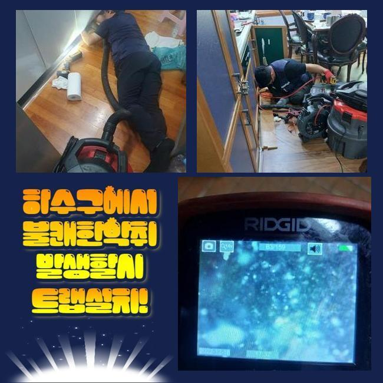
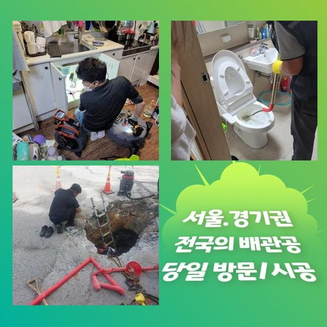
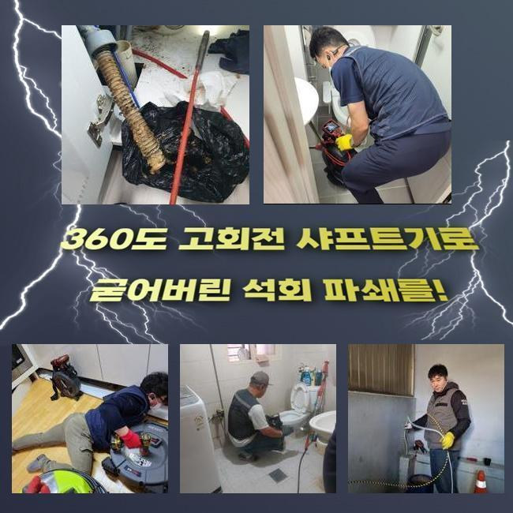
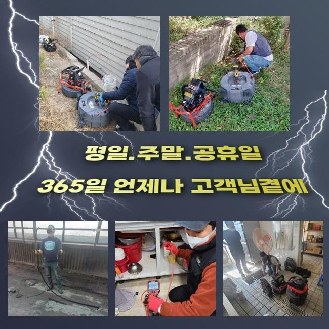
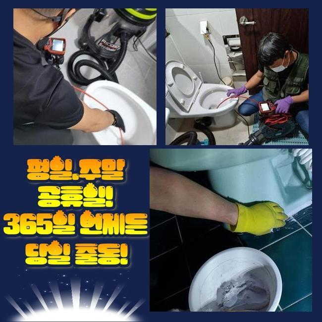
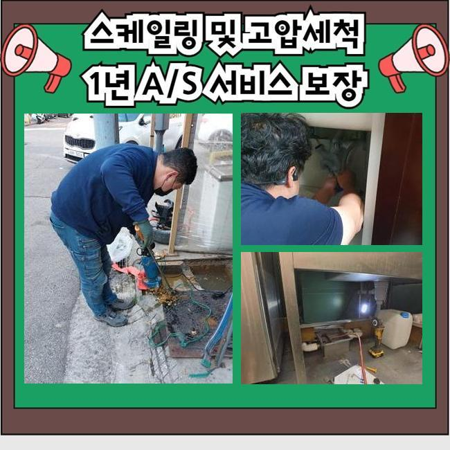
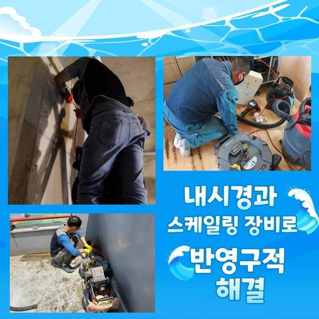

🏠 성남 수내동변기역류 대장동 악취차단 설비출장
성남 대장동 변기막힘 전문 시공 후기

📋 작업 개요
- 위치: 성남 대장동, 대장동, 성남
- 서비스 유형: 변기막힘, 하수구막힘, 배관막힘, 역류해결, 배관청소, 고압세척, 악취차단
- 작업 일시: 2024. 11. 4. 11:48
- 업체명: 하수구수사대 (010-5615-2118)
🔍 문제 상황
성남 수내동변기역류 대장동 악취차단 설비출장
일반 가정에서 배수문제가 발견됐다는 상담전화를 전달받고 긴급하게 현장으로 출동했어요
하수라인을 이용해서 오수가 배출되면서 소량의 침전물이 계속적으로 유입이 되는 환경이라서 관련된 문제들이 많이 일어나게 됩니다
하수설비의 이상시에 조속한 대처를 미루신다면 시간이 지남에 따라 순환이 힘들어지게 되면서 배수구 역류현상이나 역한냄새 등을 생기게 되며 불편감을 느끼게 되실 수도 있습니다
저희 전문진은 전문적인 노하우가 있으므로 수리를 맡기신다면 지체없이 긴급출동하고 있습니다
현장을 방문할 때는 작업시간을 줄여주는 전문기계들로 경험이 많은 전문진이 진행을 하기때문에 복잡한 상황이라도 해결 할수있는 노하우가 있습니다
저희 전문진이 최근에 작업했었던 곳을 자세히 보면서 전문적인 업체들은 어떤 작업을 통해서 문제들이 일어난 하수설비를 처리하는지 안내 해드릴게요
의뢰인의 의뢰를 받아서 찾아간 곳은 꽤 많은 가정집이 모인 주거건물로 아랫층에서 발생한 배관막힘의 증상으로 주변 세대들까지 문제점이 일어나고 있는 상황으로 보여졌습니다

🔎 원인 분석
💡 전문가 진단: 정밀 진단 장비를 사용하여 슬러지의 고착 여부를 판명하고 타격/세척 작업을 실시했습니다.
전화상 전달받은 이야기 만으로도 작은문제가 아님을 예상했고 지체될수록 피해가 커질 수 있으므로 서둘러서 출동했습니다
저희 업체가 걱정됐던 부분들은 아랫층에서 역류 상황들이 일어난 것 뿐만 아니라 역한냄새 등을 동반해서 나타나고 있는 점이였습니다
이러한 건물에서 하수관이 막히는 경우엔 밑에층에서 문제점이 발견될 가능성들이 높은게 대부분입니다
본관같은 중요한 설비등은 주로 아랫층에 매립되기 때문입니다
현장을 둘러보며 피해의 정도가 큰 가정집에서 질문을 몇가지 드렸습니다
수전을 모두 열어두고 물이 배수구를 통해서 배출되는 빠르기를 확인 해보려고 했지만 하수관 안쪽으로 불순물이 가득해서 정상적인 배수가 이루어지고 있질 못했어요
배수구 막힘사고는 원인이 되는 부분을 수리하는게 첫번째 순서이므로 막힘이 발생하고 있는 해당지점을 확인하고자 내시경노즐을 활용했어요
내시경장치는 라인을 통해 배수관 속을 실직적으로 확인하는데 도움되는 장비들로 카메라를 보면서 빠짐없이 확인작업을 실시하는 것으로 문제지점과 노폐물의 특성을 정확히 판단할수 있지요

🔧 작업 과정
빠짐없이 점검을 작업하는게 가장 중요한 작업이므로 배관 내시경기계를 능숙하게 다루는 전문업체와 진행하시는 것이 좋은 방법입니다
진단 결과와 필요한 작업을 의뢰인께 직접 보여드리므로 과잉수리와 같은 걱정없이 안심하실 수 있도록 진행합니다
종합적으로 파악해본 바로는 본관에 불순물이 쌓여있는걸 확인했습니다
본관은 건물 전체에 설치된 배수관이 모이게되는 위치로써 노폐물이 쌓이다가 정상적인 순환이 어려워지면 아랫층에서부터 피해들이 발생합니다
메인 배관에 막힘이 발생하고 있는 경우에는 보편적으로 이용하는 샤프트 장치만으로는 해결하는게 어렵습니다
이런 경우에는 하수라인을 고압으로 세척하는 기기를 활용해서 씻어내는게 제일 확실합니다
고압세척 작업은 약물을 쓰지않고 압력만으로 딱딱하게 굳은 오염물질을 분쇄하기 때문에 가장 안전한 작업방식입니다
전체 설비에 청소를 하는 것이기 때문에 노폐물이 전부 청소되면서 처음과 같이 깨끗한 배수관으로 변합니다
배수구 막힘 사고가 쉽게 대규모의 건물등은 일정한 주기로 고압의 세정과정을 진행하는 것이 좋은방법입니다
미리 배수관의 형태와 막힘을 유발하는 정확한 이유를 확인한 상태에서 강한 압력의 세척작업을 진행했어요
하수라인마다 압력의 수준을 조절하며 내시경장치로 확인절차를 병행하며 꼼꼼하게 세척과정을 완료했고 오랜 기간 배수관 속에 단단하게 굳은 노폐물을 깨끗하게 제거했어요
최종적인 통수작업을 진행하고 확인해보니 막힘현상 없이 배수가 잘되는걸 볼 수 있었어요
하수라인 안쪽 면에 음식의 기름등이 들어가고 있는경우 역류같은 일상에 피해를 주는 문제상황으로 이어질 수 있습니다


✅ 작업 완료
하수구 사용시 순환이 잘되지 않는 것 같다면 쉽게 생각하지 마시고 즉시 처리하시는 것이 제일 좋습니다
저희 전문가는 고객님께서 필요하신 경우에 수리진행이 가능하도록 준비하고 있습니다
다양한 현장에서 일어나는 배수구 막힘사고를 해결하고자 최신형의 장비들로 전문기술진과 지체없이 처리하겠습니다
도움이 필요하시다면 고민하지 마시고 지금 당장 상담전화 주시기 바랍니다




⚠️ 하수구 배관 막힘 예방 및 관리 가이드
- ✅ 머리카락, 비닐, 물티슈 등 물에 분해되지 않는 이물질은 하수구 유입을 절대 금지해 주세요.
- ✅ 하수구 거름망을 씌우고 모여진 이물질은 주기적으로 쓰레기통에 바로 비워주셔야 합니다.
- ✅ 배관 노후가 심할 경우 이물질이 더 쉽게 걸리므로 주기적인 배관 세척(고압세척 등)을 권장합니다.
- ✅ 작업 후 1년 이내 재발 시 하수구수사대에서 무상 A/S 보증 서비스를 제공합니다.
💡 핵심 정리
- 확실한 장비 작업(내시경 점검 및 샤프트 스케일링)으로 원인을 뿌리 뽑습니다.
- 작업 후 1년 이내에 동일한 부위 재발 시 100% 무상 A/S 서비스를 보장합니다.
- 서울 · 경기 · 인천 전 지역에 24시간 언제든 긴급 출동할 수 있도록 항시 대기 중입니다.
❓ 자주 묻는 질문 (FAQ)
🚨 성남 대장동 변기막힘 문제로 고민이신가요?
정확한 원인 진단과 확실한 시공으로 재발 없는 해결을 약속드립니다.
24시간 긴급 출동 | 서울 · 경기 · 인천 전지역 | 1년 내 재발 시 무상 A/S